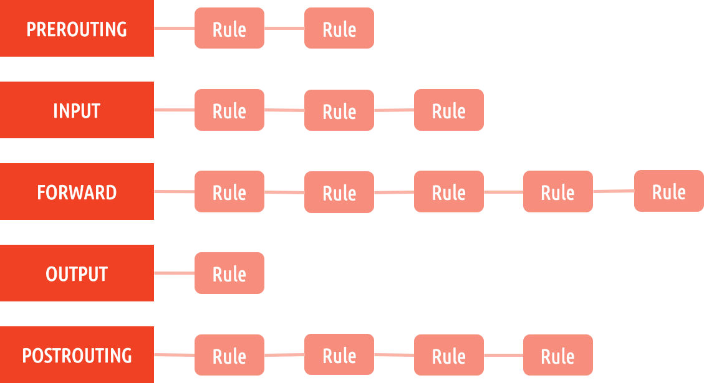
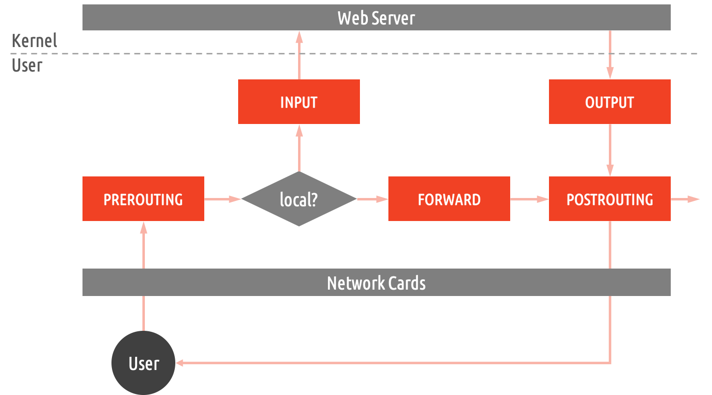
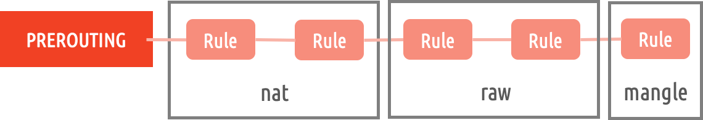

介绍
iptables 是 Linux 下的常用网络工具，可以用于对网络数据包的过滤、修改和管理。
基本概念
链的概念
链是 iptables 中的基本组成，每个链上都包含着一系列用于控制数据包的规则：

每个链在数据包流转的不同环节中发挥作用，流转图和链的关系如下：

图中红色的代表的是 iptables 中的规则链。
表的概念
表是我们操作这些链的接口，每个链上的规则都被分到不同的表上：

iptables 中共有 4 张表，每张表中的规则会被用在不同的链中，下面是对应关系：
| 表名 | 包含的链 |
|---|---|
| raw | PREROUTING, OUTPUT |
| mangle | PREROUTING, INPUT, OUTPUT, FORWARD, POSTROUTING |
| nat | PREROUTING, POSTROUTING, OUTPUT, INPUT |
| filter | INPUT, OUTPUT, FORWARD |
规则的概念
规则包含匹配条件和动作，规则的含义是，满足某种匹配条件时进行某个动作。
匹配条件包含两种
- 基本匹配条件：源IP 和 目标IP
- 扩展匹配条件：源Port 和 目标Port
动作包含：
- ACCEPT：允许通过
- DROP：丢弃数据包
- REJECT：拒绝数据包通过
- SNAT：源地址转换，解决局域网用户用同一公网地址上网
- MASQUERADE：SNAT 的特殊形式
- DNAT：目标地址转换
- REDIRECT：本地端口映射
- LOG：记录日志的规则
iptables 实战
iptables 查询
1 | iptables [-t filter] -L # 查询 filter 表中的规则 [] 中的内容可以省略 |
增加规则
拒绝 192.168.1.146 上的所有报文访问访问当前机器：
1 | iptables -t filter -I INPUT -s 192.168.1.146 -j DROP |
-t 表示对 filter 表进行操作
-I INPUT 表示插入规则到 INPUT 链中，这里是从前面插入
-s 参数指明匹配条件中的源IP
-j DROP 指明匹配到时的动作为丢弃
前面是在表头插入的例子，如果要插入在表后使用 -A INPUT，下面例子在 INPUT 表尾部添加过滤规则，当源 IP 为 192.168.1.146 时接受数据包：
1 | iptables -t filter -A INPUT -s 192.168.1.146 -j ACCEPT |
使用 -I INPUT 2 可以将规则插入在第二条规则前面，-A INPUT 2 则可以将规则插入到第二条规则后面，规则需要使用 --line-numbers 参数显示。
删除规则
使用下面命令删除 filter 表 INPUT 链上的第二条规则：
1 | iptables -D INPUT 2 |
或者使用匹配规则去删除规则：
1 | iptables -D INPUT -s 192.168.1.146 -j ACCEPT |
删除所有规则使用 -F 选项：
1 | iptables -t filter -F INPUT # 清空 filter 表上的 INPUT 链上的规则 |
修改规则
修改规则使用 -R 选项
下面例子对 filter 表中 INPUT 链第一条规则进行修改：
1 | iptables -t filter -R INPUT -s 192.168.1.146 -j REJECT |
这里 -s 选项必须填写否则默认为 0.0.0.0/0，将导致所有包被拒绝！！！
使用 -P 可以修改链的默认规则：
1 | iptables -t filter -P FORWARD DROP # 将 filter 表 forward 链的上的数据包丢弃 |
保存规则
CentOS 中使用下面命令保存规则：
1 | service iptables save |
保存后规则存放在 /etc/sysconfig/iptables 中。